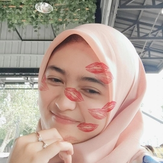
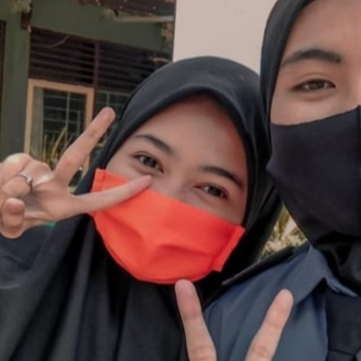

Haiiii.... Kenalin nih namanya Hibatin Wafiroh, kalo panggilannya
banyak bett menurutku, bisa dipanggil Firaaa, Hibhib, Batin, Hibatin
dan jangan lupa Ilaaa. Dia pada tanggal 5 Mei 2023 udah 20thn nihhh,
Cieeee-cieeee🥳🥳🥳. BTW dia ini jadi Brand Ambasador buat fakultasnya
gesss, wishhh kereen bangettt🛐🛐. Tapi sekarang dia lagi sakittt TBC
🥺🥺, kasihann yaaaa, ku doa in semoga semester depan udah sembuh
totall,trus bisa senyumm, bisa ngemil yang banyakkk, bisa belajar
lagi, dan banyakk bangett. BTW ilaaa ni udah jadi onti gessss Congrats
yaaaa ilaaaa!! keturutan juga punya ponakan laki-lakii🥳🥳. Kan ilaaa
belum pernah ngrasain jadi kakak yang ngasuh adek kecil kannn,
kesempatan nihhh. Nanti jangan lupa digendongii, di liling, dikeloni,
wahhh pokoknya kalo ada adek kecil pasti sueruuuu. Kalo aku sih kalo
ada anak kecil pingin banget nguleng pipinyaaa trusssssğŸ˜ğŸ˜, coba ini
aku aja atau ilaaa juga begutu, pingiiinnn nguleng pipinya adekkkkğŸ˜ğŸ˜
🥳🕯️


Selamat ulang tahun ilaaaaa🥳🕯️, tahun iki wm ws 20 tahun eee nggak
keroso yaaa. Harapanku semoga wm ndang sembuh trus iso meraih seluruh
impianmu trus iso dadi orang sg sukses malah iso nganti budalne ortumu
berangkat haji aamiinnn...🙏🙏 Maaf yaa aku gur iso maringi hadiah
ngene iki aku bingung atene ngado op ng wm ng kondisi ngeneki, ndisek
ws enok kepinginan awit ndisek atene ngado boneka kucing karo mukenah
gae wm, BTW aku intuk ide boneka kucing wi goro2 wm tau cerito nk
pernah ditumbasne bapakmu trus wm ne seneng. Aku minta maaf gae kabeh
kesalahanku ng wm, kalo ditakoni sayang seh isek sayang malah nganti
abene kae aku njaluk komitmen maneh ng wm wkwkwkw dasar isa plinplan,
sakjoke putus aku sedih, nangis, stress iku ws bendino. Padahal kae
aku sg mutusne wm tpi malah aku sg sedih, ya gimana lagi aku ws kyok
gx dianggep karo wm, aku berusaha nglepasno wm masio asline isih
sayang, tapi disisi lain atiku kroso sakit. Ya udah gimana lagi
mungkin iki ws takdir, Njir kok aku malah curhat.🗿🗿🗿
Trus Semoga iso petuk seseorang sg sayang banget karo wm iso tuluuuus
ng wm, pesenku oj kok sia2 ne arek iku, kalo enek masalah curhat ng
dek e terbuka o ng dek e, oj sampek ngenteni peka ne mergo kepekaan
seseorang iku gx podo. Karo sayangono temenen arek iku yaaa🥰🥰, Satu
nkas tentang masalah hubungan privat, masio wm seneng privat tpi
sesekali publish dia ben kabeh ngerti owalahh bakno fira ws nduwe
pasangan to gituuu. Sudah yaa iku pesenku ng wm asline sek akeh sg
pingen tk sampekne ng wm tpi panggon e gx cukup. Doa ku yang terbaik
untuk mu ilaaaaa🤗🤗🤗, semoga wm bahagia di dunia akhirat aamiinnn...
BTW suka nggak karo hadiahku ikii iso dipencet iku surat
ee...🗿